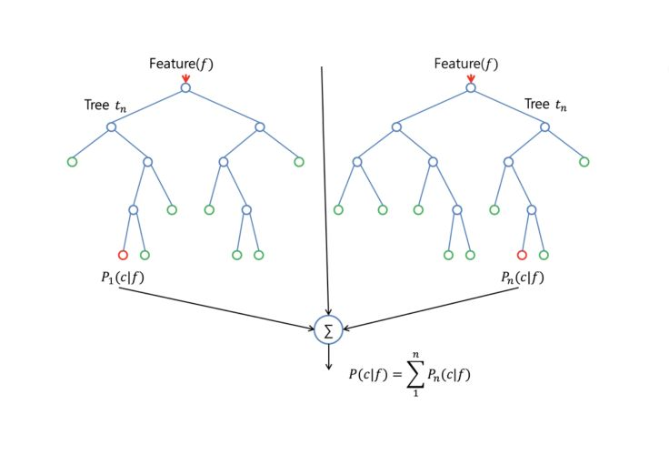
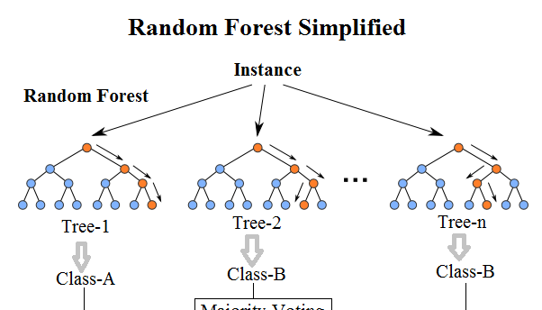
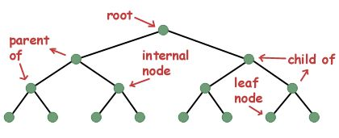
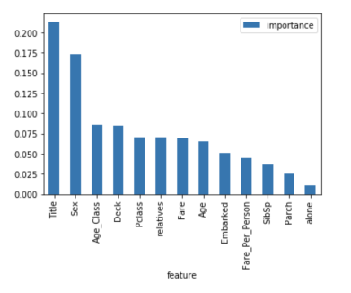
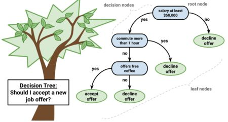
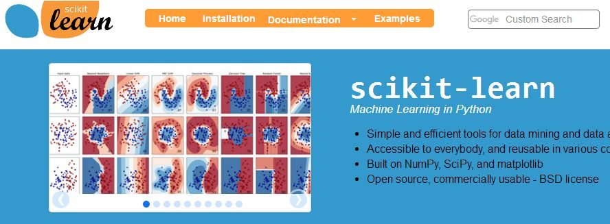

随机森林是一种灵活且易于使用的机器学习算法，即便没有超参数调优，也可以在大多数情况下得到很好的结果。它也是最常用的算法之一，因为它很简易，既可用于分类也能用于回归任务。 在这篇文章中，你将了解到随机森林算法的工作原理以及适用范围。
随机森林算法工作原理
随机森林是一种有监督学习算法。就像你所看到的它的名字一样，它创建了一个森林，并使它拥有某种方式随机性。 所构建的“森林”是决策树的集成，大部分时候都是用“bagging”方法训练的。 bagging方法，即bootstrap aggregating，采用的是随机有放回的选择训练数据然后构造分类器，最后组合学习到的模型来增加整体的效果。
简而言之：随机森林建立了多个决策树，并将它们合并在一起以获得更准确和稳定的预测。随机森林的一大优势在于它既可用于分类，也可用于回归问题，这两类问题恰好构成了当前的大多数机器学习系统所需要面对的。 接下来，将探讨随机森林如何用于分类问题，因为分类有时被认为是机器学习的基石。 下图，你可以看到两棵树的随机森林是什么样子的：

除了少数例外，随机森林分类器使用所有的决策树分类器以及bagging 分类器的超参数来控制整体结构。 与其先构建bagging分类器，并将其传递给决策树分类器，您可以直接使用随机森林分类器类，这样对于决策树而言，更加方便和优化。要注意的是，回归问题同样有一个随机森林回归器与之相对应。

随机森林算法中树的增长会给模型带来额外的随机性。与决策树不同的是，每个节点被分割成最小化误差的最佳特征，在随机森林中我们选择随机选择的特征来构建最佳分割。因此，当您在随机森林中，仅考虑用于分割节点的随机子集，甚至可以通过在每个特征上使用随机阈值来使树更加随机，而不是如正常的决策树一样搜索最佳阈值。这个过程产生了广泛的多样性，通常可以得到更好的模型。
一个更容易理解算法的例子
想象一下，一个名叫安德鲁的人，想知道一年的假期旅行中他应该去哪些地方。他会向了解他的朋友们咨询建议。
起初，他去寻找一位朋友，这位朋友会问安德鲁他曾经去过哪些地方，他喜欢还是不喜欢这些地方。基于这些回答就能给安德鲁一些建议，这便是一种典型的决策树算法。
朋友通过安德鲁的回答，为其制定出一些规则来指导应当推荐的地方。随后，安德鲁开始寻求越来越多朋友们的建议，他们会问他不同的问题，并从中给出一些建议。 最后，安德鲁选择了推荐最多的地方，这便是典型的随机森林算法。
随机森林算法的特征的重要性
随机森林算法的另一个优点是可以很容易地测量每个特征对预测的相对重要性。 Sklearn为此提供了一个很好的工具，它通过查看使用该特征减少了森林中所有树多少的不纯度，来衡量特征的重要性。它在训练后自动计算每个特征的得分，并对结果进行标准化，以使所有特征的重要性总和等于1。
如果你不了解决策树是如何工作对，也不知道什么是叶子或节点，可以参考维基百科的描述：在决策树中，每个内部节点代表对一类属性的“测试”（例如，抛硬币的结果是正面还是反面)，每个分支代表测试的结果，每个叶节点代表一个类标签（在计算所有属性之后作出的决定）。叶子就是没有下一分支的节点。

通过查看特征的重要性，您可以知道哪些特征对预测过程没有足够贡献或没有贡献，从而决定是否丢弃它们。这是十分重要的，因为一般而言机器学习拥有的特征越多，模型就越有可能过拟合，反之亦然。
下面你可以看到一个表格和一个可视化图表，显示了13个特征的重要性，我在有监督分类项目中使用了kaggle上着名的Titanic 数据集。

决策树与随机森林的区别
正如我先前提到的，随机森林是决策树的集合，但仍有一些区别。

如果您将带有特征和标签的训练数据集输入到决策树中，它将制定一些规则集，用于预测。
例如，如果您想预测某人是否会点击在线广告，可以收集该广告的过去点击人员以及能够描述其做决定的特征。一旦你将这些特征和标签放入决策树中，它会生成节点和一些规则，然后你就可以预测广告是否会被点击。但决策树通常通过计算信息增益和基尼指数来生成节点和规则时，相比之下，随机森林则是随机的。
另一个区别是“深度”决策树往往会遭遇过拟合问题。而随机森林则可以通过创建随机的特征子集并使用这些子集构建较小的树，随后组成子树，这种方法可以防止大部分情况的过拟合。要注意的是，这同时会使得计算速度变慢，并取决于随机森林构建的树数。
随机森林算法重要的超参数
随机森林中的参数要么用来增强模型的预测能力，要么使模型更快。 以下将讨论sklearns内置的随机森林函数中的超参数。

首先，“n_estimators”超参数表示算法在进行最大投票或采取预测平均值之前建立的树数。 一般来说，树的数量越多，性能越好，预测也越稳定，但这也会减慢计算速度。
另一个重要的超参数是“max_features”，它表示随机森林在单个树中可拥有的特征最大数量。 Sklearn提供了几个选项，在他们的文档中有描述：
http://scikit-learn.org/stable/modules/generated/sklearn.ensemble.RandomForestClassifier.html
最后一个重要的超参数是“min_sample_leaf”，正如其名称所述，这决定了叶子的数量。
“n_jobs”超参数表示引擎允许使用处理器的数量。 若值为1，则只能使用一个处理器。 值为-1则表示没有限制。
“random_state”，表示随机数种子，保证模型的输出具有可复制性。 当它被赋于一个指定值，且模型训练具有相同的参数和相同的训练数据时，该模型将始终产生相同的结果。
最后，还有一个“oob_score”（也称为oob采样），它是一种随机森林交叉验证方法。 在这个抽样中，大约三分之一的数据不用于模型训练，而用来评估模型的性能。这些样本被称为袋外样本。它与留一法交叉验证方法非常相似，但几乎没有附加的计算负担。
随机森林实现过程
随机森林中的每一棵分类树为二叉树，其生成遵循自顶向下的递归分裂原则，即从根节点开始依次对训练集进行划分；在二叉树中，根节点包含全部训练数据， 按照节点纯度最小原则，分裂为左节点和右节点，它们分别包含训练数据的一个子集，按照同样的规则节点继续分裂，直到满足分支停止规则而停止生长。若节点n上的分类数据全部来自于同一类别，则此节点的纯度I(n)=0，纯度度量方法是Gini准则，即假设P(Xj)是节点n上属于Xj 类样本个数占训练。
具体实现过程如下：
（1）原始训练集为N，应用bootstrap法有放回地随机抽取k个新的自助样本集，并由此构建k棵分类树，每次未被抽到的样本组成了k个袋外数据。
（2）设有mall个变量，则在每一棵树的每个节点处随机抽取mtry个变量(mtry n mall)，然后在mtry中选择一个最具有分类能力的变量，变量分类的阈值通过检查每一个分类点确定。
（3）每棵树最大限度地生长, 不做任何修剪。
（4）将生成的多棵分类树组成随机森林，用随机森林分类器对新的数据进行判别与分类，分类结果按树分类器的投票多少而定。
优缺点分析
就像我之前提到的那样，随机森林的一个优点是它可以用于回归和分类任务，并且很容易查看模型的输入特征的相对重要性。
随机森林同时也被认为是一种非常方便且易于使用的算法，因为它是默认的超参数通常会产生一个很好的预测结果。超参数的数量也不是那么多，而且它们所代表的含义直观易懂。
机器学习中的一个重大问题是过拟合，但大多数情况下这对于随机森林分类器而言不会那么容易出现。因为只要森林中有足够多的树，分类器就不会过度拟合模型。
随机森林的主要限制在于使用大量的树会使算法变得很慢，并且无法做到实时预测。一般而言，这些算法训练速度很快，预测十分缓慢。越准确的预测需要越多的树，这将导致模型越慢。在大多数现实世界的应用中，随机森林算法已经足够快，但肯定会遇到实时性要求很高的情况，那就只能首选其他方法。
当然，随机森林是一种预测性建模工具，而不是一种描述性工具。也就是说，如果您正在寻找关于数据中关系的描述，那建议首选其他方法。
适用范围
随机森林算法可被用于很多不同的领域，如银行，股票市场，医药和电子商务。 在银行领域，它通常被用来检测那些比普通人更高频率使用银行服务的客户，并及时偿还他们的债务。 同时，它也会被用来检测那些想诈骗银行的客户。 在金融领域，它可用于预测未来股票的趋势。 在医疗保健领域，它可用于识别药品成分的正确组合，分析患者的病史以识别疾病。 除此之外，在电子商务领域中，随机森林可以被用来确定客户是否真的喜欢某个产品。
总 结
随机森林是一种很好的算法，适合在模型开发过程的早期进行训练，了解它的工作原理，并且由于其简易性，很难构建出“糟糕”的随机森林。 如果您需要在短时间内开发模型，随机森林会是一个不错的选择。 最重要的是，它为你选择的特征提供了一个很好的重要性表示。
随机森林在性能方面也很难被击败。 当然，没有最好只有更好，你总能找到一个性能更好的模型，比如神经网络，但这类模型通常需要更多的时间来开发。 最重要的是，随机森林同时可以处理许多不同属性的特征类型，如二元的，类别的和数值的。总的来说，随机森林是一个（相对大部分而言）快速，简单且灵活的工具，尽管它存在一定的局限性。